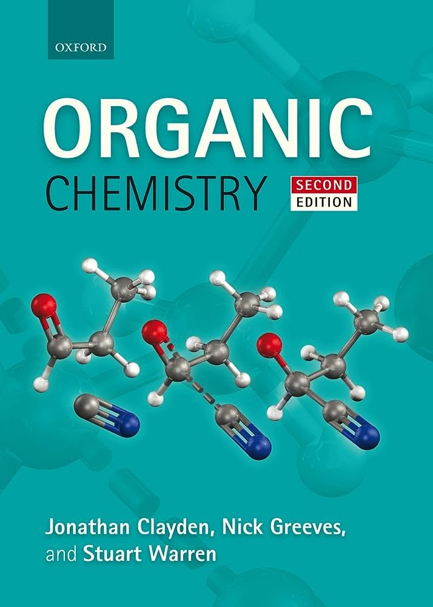

Organic Chemistry: Aspect and Causal Structure Paperback
Price: 500.00 INR
Product Details
- Publisher: Oxford; Second edition (25 April 2012)
- Language: English
- Binding: Paperback
- Pages: 1260 pages
- ISBN-10: 0199270295
- ISBN-13: 978-0199270293
- Item Weight: 2 kg 480 g
- Dimensions: 27.69 x 4.83 x 19.81 cm
- Net Quantity: 1.00 count
- Best Sellers Rank: #294,389 in Books (See Top 100 in Books)
- #722 in Chemistry Textbooks